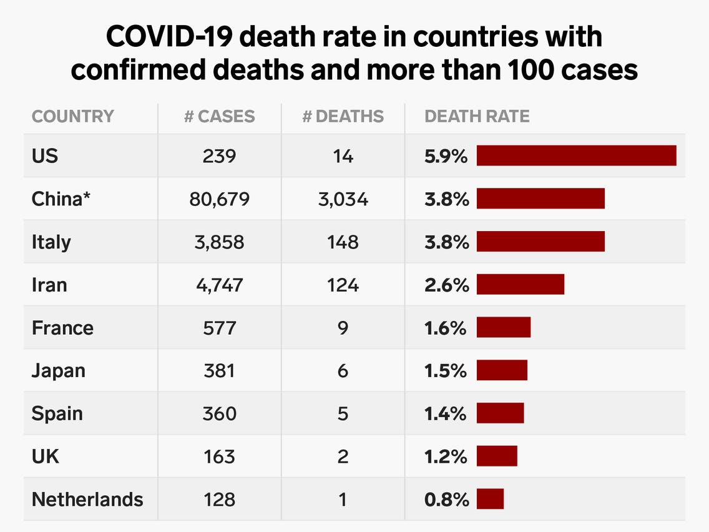
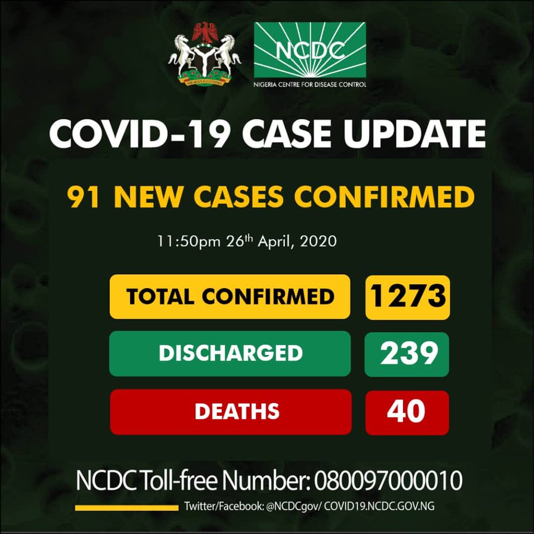

Tiskaesblog
Discussion: COVID-19
...break the chain of the spread.
...break the chain of the spread.

Coronavirus disease (COVID-19) is an infectious disease caused by a newly discovered coronavirus. Most people infected with the COVID-19 virus will experience mild to moderate respiratory illness and recover without requiring special treatment. Older people, and those with underlying medical problems like cardiovascular disease, diabetes, chronic respiratory disease, and cancer are more likely to develop serious illness. The best way to prevent and slow down transmission is be well informed about the COVID-19 virus, the disease it causes and how it spreads. Protect yourself and others from infection by washing your hands or using an alcohol based rub frequently and not touching your face. The COVID-19 virus spreads primarily through droplets of saliva or discharge from the nose when an infected person coughs or sneezes, so it’s important that you also practice respiratory etiquette (for example, by coughing into a flexed elbow). At this time, there are no specific vaccines or treatments for COVID-19. However, there are many ongoing clinical trials evaluating potential treatments. WHO will continue to provide updated information as soon as clinical findings become available. Stay informed!


Images gotten from Google and NCDC respectively.
The COVID-19 virus affects different people in different ways. COVID-19 is a respiratory disease and most infected people will develop mild to moderate symptoms and recover without requiring special treatment. People who have underlying medical conditions and those over 60 years old have a higher risk of developing severe disease and death. Common symptoms include: fever tiredness dry cough. Other symptoms include: shortness of breath aches and pains sore throat and very few people will report diarrhoea, nausea or a runny nose. People with mild symptoms who are otherwise healthy should self-isolate and contact their medical provider or a COVID-19 information line for advice on testing and referral. People with fever, cough or difficulty breathing should call their doctor and seek medical attention. Stay safe!
To prevent infection and to slow transmission of COVID-19, do the following: Wash your hands regularly with soap and water, or clean them with alcohol-based hand rub. Maintain at least 1 metre distance between you and people coughing or sneezing. Avoid touching your face. Cover your mouth and nose when coughing or sneezing. Stay home if you feel unwell. Refrain from smoking and other activities that weaken the lungs. Practice physical distancing by avoiding unnecessary travel and staying away from large groups of people.
It's no more news that the coronavirus is a deadly disease. We must put in our best individually to stop the spread of the global vice by staying safe at home and practicing all the protective measures recommended by the due health agencies. May GOD help us all.